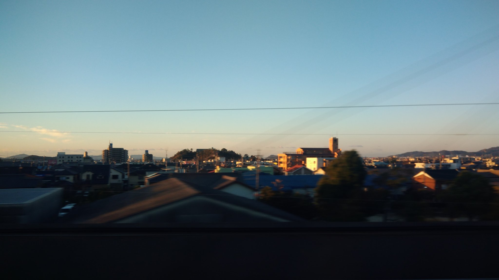

TOKAIDO SHINKANSEN WINDOW VIEW
三河大島はいつ見える？座席側は？
海の向こうに、ぽつんと浮かぶ島。

- 見える区間
- 豊橋 → 三河安城
- 座席側
- A席・海側
- タイミング
- 東京発のぞみ基準で約84分後
- 写真
- 1 枚
位置の目安
地図をひらく航空写真で周辺の目印を確認できます。
三河大島の見つけ方
豊橋を過ぎたあと、A席側に三河湾と三河大島が見えることがあります。大きな観光名所というより、窓の外に一瞬だけ現れる小さな島影。浜名湖のあとにも、海側にはまだ見つける楽しみがあります。見通しがよい日に、海の向こうを探してみてください。
東京から新大阪方面へ向かう場合は、豊橋 → 三河安城が近づいたらA席・海側の窓を少し早めに見てください。新大阪から東京方面へ向かう場合は、通過順が逆になります。
東海道新幹線の車窓としてのポイント
三河大島は、富士山だけではない東海道新幹線の車窓を楽しむための見どころです。列車の速度が速いため、見える時間は短く、天気や座席位置によって見え方が変わります。